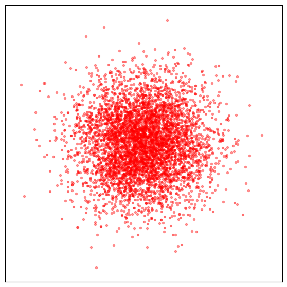
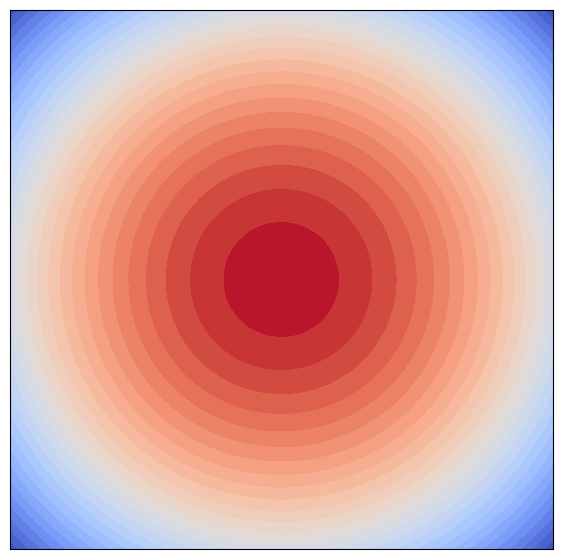
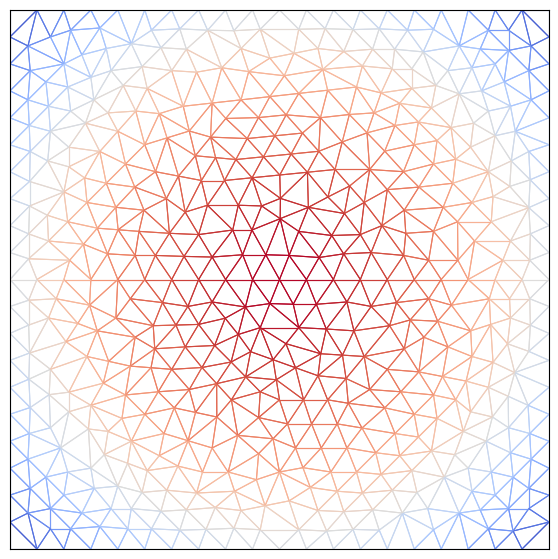

本研究は巨大なマルチエージェントシステム（MAS）や機械学習モデルの理論解析に必要な新たな数理基盤として「離散平均場ゲーム理論」の創出を実現する．平均場ゲーム（MFG）は，初期値終端値問題の形をした非線形偏微分方程式系である．本研究の第一の目的はMFGの再定式化に非線形安定化有限要素法を組み合わせた数値解法の開発により，MFGの現実的な時間での正確な計算を可能にすることである．一方で，機械学習アルゴリズムの学習過程を記述する連続数理モデルとして平均場型最適制御（MFTC）がある．MFGとMFTCは数学的には多くの共通の構造を持つ．第二の目的はMFTCを通じて機械学習アルゴリズムの性能向上と数理的理解を同時に実現することである．これにより，MAS，最適制御，機械学習の数理的理解を深化させるとともに，実用的な数値手法と新しい最適化手法を提示する．本研究は，日本が強みを持つ理論数値解析学の先端的手法を統合し，国際的にも未踏領域である「離散MFG理論」を体系化する．
連携研究者
協力研究者
研究成果は， 研究メンバー，連携研究者，研究協力者のresearchmapページなどで公表されます．本ページに再掲することはしません．（事務作業軽減の目的です）